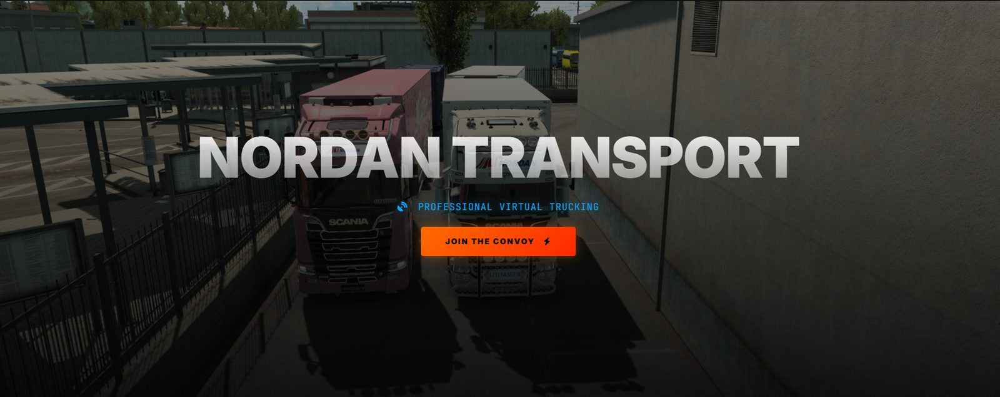
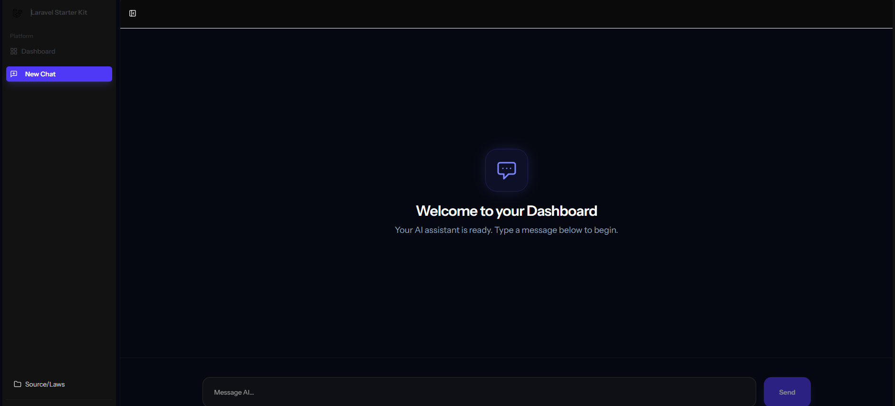

A multi-server Minecraft network running behind a Velocity proxy. I'm lead developer on the core plugin: the Paper-side layer every server loads, so a player's data stays consistent in MySQL when they move between servers.
Work
Five systems. Four running, one archived

The hub Nordan Transport's drivers use day to day. Delivery telemetry syncs in from Trucky Hub, management gets the analytics side, and the whole thing is localised so it reads properly in more than one language.

A heads-up display that reads live physics data out of the game's shared-memory file and draws it over the window. It shows up when you start driving and goes away when you pause, so there's nothing to manage while you're moving.

A chat workstation on my own infrastructure, wired to Groq's LPU inference so responses come back fast. Two-factor on accounts, conversation history in MySQL, and answers rendered as real Markdown rather than a wall of asterisks.

The staff panel for a 24/7 online radio station: a week-long booking grid backed by a date engine I wrote myself, plus presenter accounts, recruitment, listener requests and a bug inbox. The station isn't running any more, but the panel did its job while it was.
Stack
What I reach for, and what for
Backend & data
- Laravel application core
- Java Paper plugins
- MySQL persistence
- REST APIs Groq, AzuraCast, Trucky
Interface
- Vue 3 Composition API
- Inertia.js SPA, no API layer
- Tailwind CSS application UI
- CSS hand-written, like this page
Systems
- Rust telemetry, tooling
- Tauri desktop shell
- Win32 API shared memory
- Velocity proxy networking
How I work
01
I use what I build
Every project here was made for a group I was already part of. When something breaks I hear about it from the person it broke for, usually within the hour, which makes it fairly obvious what to fix first.
02
Security while it's cheap
I check my own code for the things that actually get exploited: injection, request forgery, internal identifiers leaking into the DOM. Much easier to handle while the code is still fresh in my head than to retrofit six months later.
03
Real deployments
Everything goes out on a proper path. Push to GitHub, a webhook picks it up, migrations run, assets compile. That costs a day to set up once and saves a nervous manual deploy every time after.
Available for work
Got something that needs building?
I'm open to new projects. Backend work, desktop tooling, or picking up a system that's outgrown whoever started it.